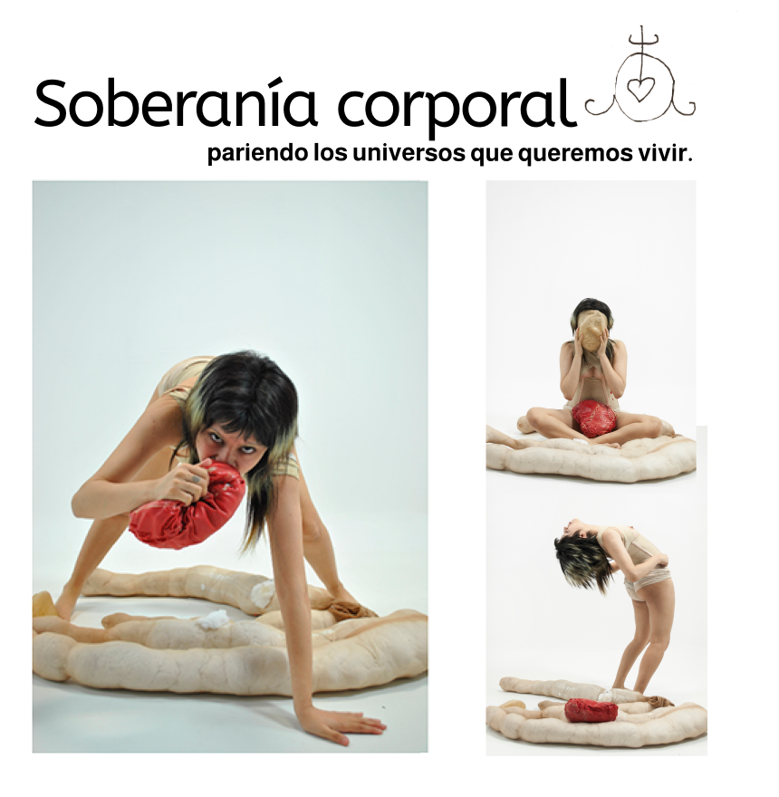
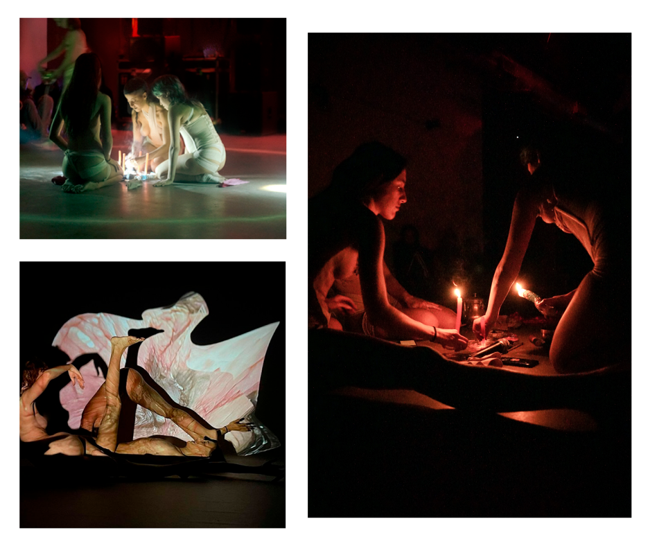

Creación de una experimentación mágica, viviendo deseantes, alimentando y reproduciendo conocimientos sensibles, experiencias, diversidades. En colectivo, el ritual del cuidado, de la ternura. El círculo como protección de lo sagrado se convierte en un dispositivo tecnológico que pulsa con nuestras energías, donde sensores, algoritmos y cuerpos dialogan para generar un espacio compartido de invocación y resonancia. En estos rituales tecnológicos, lo digital no reemplaza lo ancestral sino que lo expande: cada gesto se vuelve código, cada conexión una ofrenda, cada circuito un territorio simbólico que resguarda lo común. Así, la tecnología se integra como parte del conjuro mismo, sosteniendo prácticas colaborativas que reencantan lo cotidiano y nos permiten habitar la potencia colectiva de un cuidado que irradia en red.
